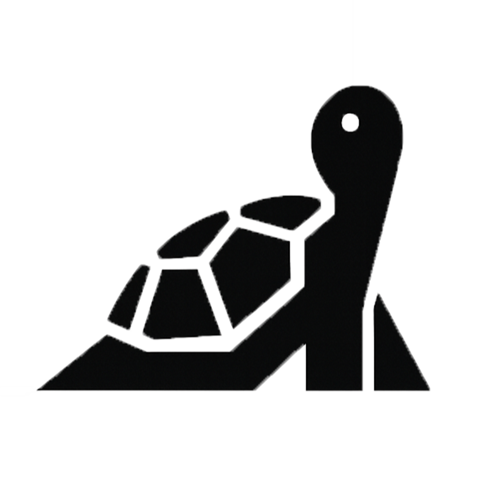

캐릭터 디자인
화면에 등장할 거북이/기린 스타일을 골라보세요.
감지 민감도
자세가 어느 정도 흐트러졌을 때 알려드릴지 정해주세요.
컴퓨터 켤 때 자동 실행
전원을 켜면 JJUUK가 알아서 트레이에 자리잡아요.
다크 모드
화면이 눈에 편한 어두운 톤으로 바뀌어요.
내 자세 다시 측정하기
현재 자세를 새 기준으로 다시 기록해요.

화면에 등장할 거북이/기린 스타일을 골라보세요.
자세가 어느 정도 흐트러졌을 때 알려드릴지 정해주세요.
전원을 켜면 JJUUK가 알아서 트레이에 자리잡아요.
화면이 눈에 편한 어두운 톤으로 바뀌어요.
현재 자세를 새 기준으로 다시 기록해요.